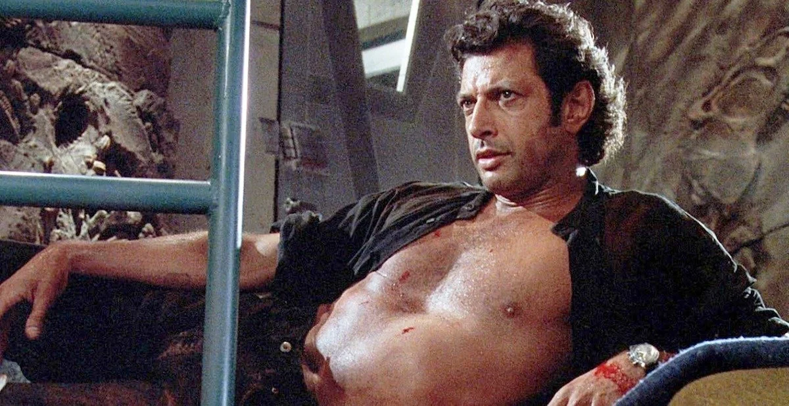

Welcom to the Jeff Goldblum Appreciation Station! My name is Kaden McEntire, and I made this website dedicated to my favorite actor, Jeff Goldblum. Below, you can find more information and fun facts about Jeff Goldblum.
Jeff's middle name is Lynn. |
Jeff was born is Pennsylvania is 1952. |
Jeff Goldblum's height is 6'4". |
Jeff has been married three times and has two kids. |
Jeff is an accomplished jazz pianist as well as an actor. |
Jeff has been featured in over 70 different films. |
Jeff has won eight different awards over the course of his carreer. |
He has also been nominated an extra fifteen times. |
Oops, all out of Jeff facts. :( |
Jeff Goldblum has starred in more than seventy films, so it's no wonder that he has had several roles in some big movies. Here are a few examples of roles he has played.
.jpg)
In "Jurassic Park" (1993), Goldblum played the character of a mathematician who specializes in chaos theory, and is brought to a theme park where genetically engineered dinosaurs roam free. His character's wit and philosophical musings became a highlight of the movie.

In "Independence Day" (1996), Goldblum played the role of a computer expert who uncovers an alien invasion and helps the President of the United States save humanity. His portrayal of the witty, intellectual character earned him critical acclaim and cemented his status as a leading man.
In "Thor: Ragnarok" (2017), Goldblum played the flamboyant and eccentric ruler of the planet Sakaar in the Marvel Cinematic Universe. His portrayal of the character was praised for its humor and energy, and helped make the movie a critical and commercial success.